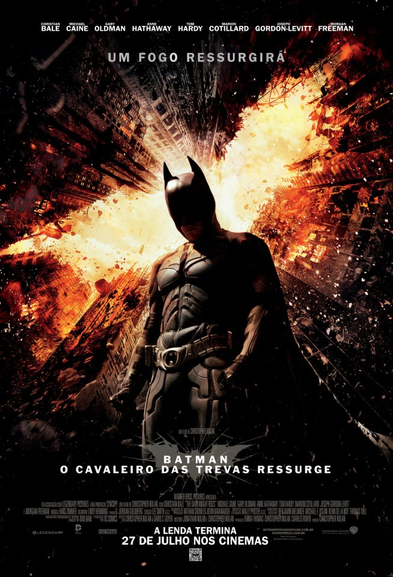
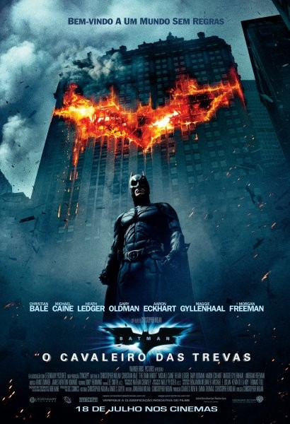

Aventura de ação
Batman Begins
IMDB: 8.2
Batman Begins explora as origens da lenda do Batman e o surgimento do Cavaleiro das Trevas como uma força...

Aventura de ação e crime
O Cavaleiro Das Trevas
IMDB: 9.0
Chirstopher Nolan se reúnem após seu sucesso de bilheteria com Batman Begins....

Aventura de ação
O Cavaleiro Das Trevas Renasce
IMDB: 8.4
Dirigindo um dos filmes mais esperados do ano. Chirstopher Nolan retorna a Gothan para completar....